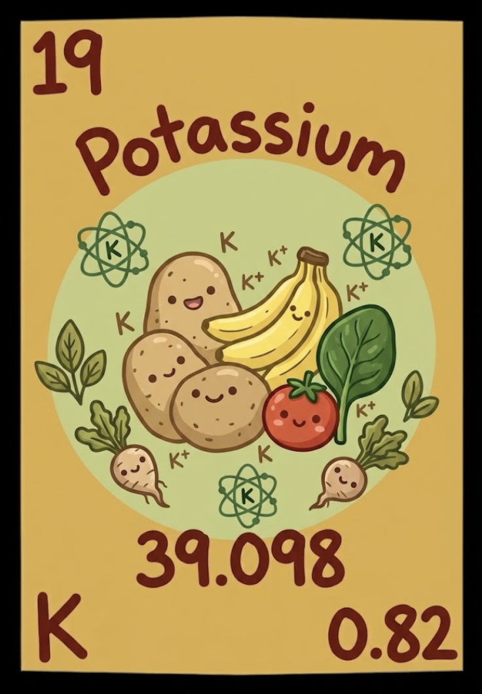
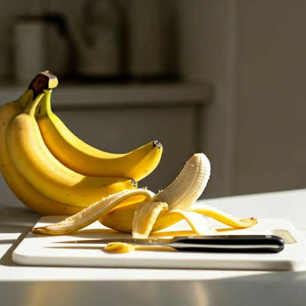
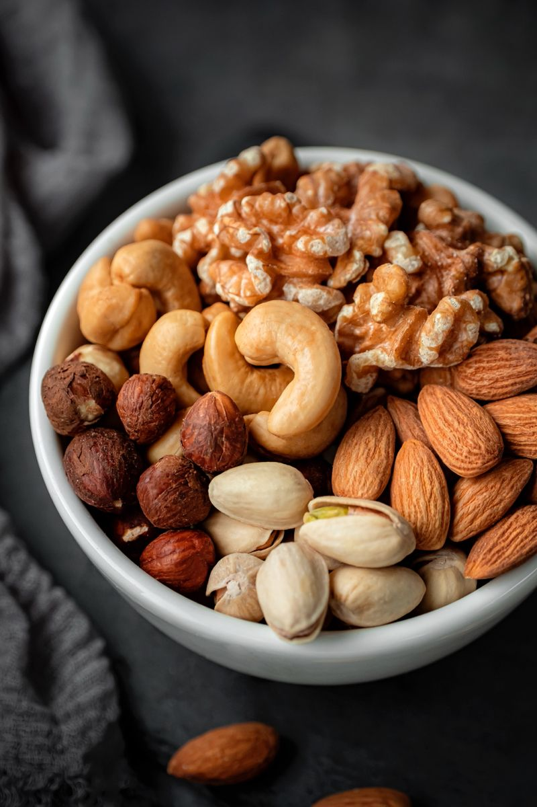
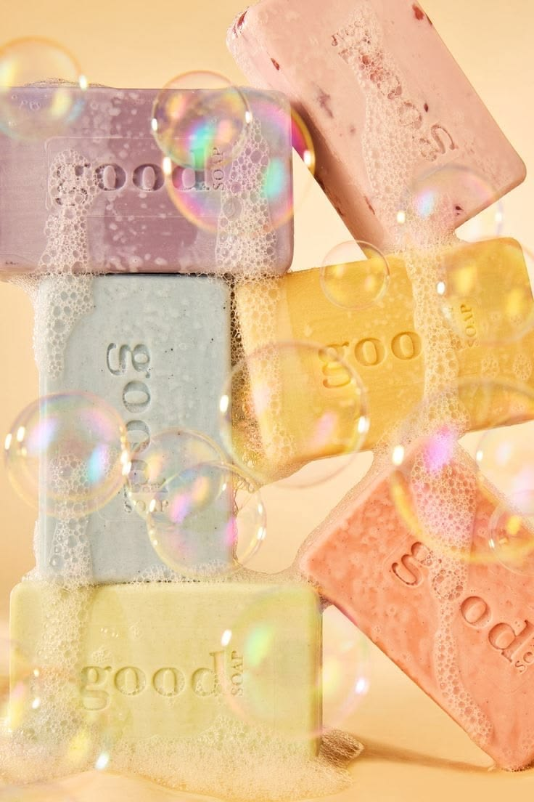

Atomic Number : 19
Atomic Mass : 39.10
Proton Number : 19
Neutron Number : 19
Category : Alkali Metal
Potassium was discovered in 1807 by British chemist Humphry Davy. He isolated potassium by using electrolysis on molten potassium hydroxide. Potassium was the first metal to be discovered through electrolysis. The name potassium comes from "potash," a substance from which it was originally obtained. Today, potassium is an important element used in fertilizers, industry, and living organisms.
State at room temperature: Solid Colour: Silvery-white Odour: Odourless Taste: Not applicable; reactive metal Density: 0.86 g/cm³ Melting point: 63.38°C Boiling point: 759°C Solubility: Reacts with water Molecular form: Usually exists as potassium atoms (K)
Potassium is a highly reactive alkali metal. It reacts quickly with water to form potassium hydroxide and hydrogen gas: 2K + 2H₂O → 2KOH + H₂ Potassium reacts with oxygen to form potassium oxide. It reacts with halogens to form ionic compounds such as potassium chloride (KCl). Potassium must be stored under oil because it reacts easily with air and moisture.
Potassium is not found as a pure element in nature because it is very reactive. It is mainly found in minerals such as sylvite and carnallite. Potassium compounds are present in soil and are important nutrients for plants. Potassium is also found in living organisms, where it helps control body functions.
Potassium is mainly used in fertilizers to help plants grow. Potassium compounds are used in making soaps, glass, and some chemicals. Potassium is important in the human body because it helps control muscles, nerves, and fluid balance. Potassium salts are used in some medicines and food products. Potassium compounds are also used in fireworks to create purple flames.




Potassium is a very soft metal and can be cut with a knife. Potassium reacts violently with water and produces hydrogen gas. The symbol K comes from the Latin word "kalium." Potassium is essential for life and is found in every living organism. Potassium compounds can produce a purple colour in fireworks. Pure potassium is stored under oil to prevent it from reacting with air and water.